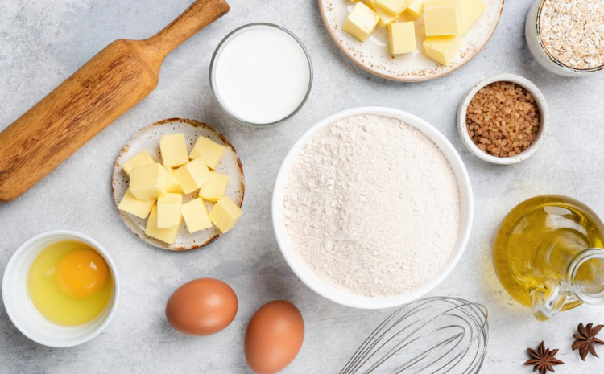

member
Veda
對法國歷史文化背景與該時代的法式甜點有滿滿的熱愛。畢業後創立自己的甜點品牌，因此有了Le jardin sucré。創立品牌三年後，我們有了自己了小店面， 是我們浪漫的小花園空間，歡迎你們與我們一起享用與擁有一個糖的花園。
法國甜點能夠迎來第一次巔峰的時刻一切都要歸功於路易十四，在路易十四時期的法國人，他們追求精緻的生活，而甜品就是他們餐桌上的壓軸之作。他不僅締造了法國封建史上最鼎盛的時期，並在法國掀起了一股追求精緻奢華的旋風。
18世紀為廚房啟蒙運動（la cuisine des lumières）的開端，人們對於料理有了新的見解，菜餚不再僅僅是菜餚，而是一門科學，進而創造、創新。在一開始最基礎、自然的食材，經過不斷的混合到最後成為一道複雜且昂貴的料理，新美食的成分變得越來越豪華，且基本混合物非常昂貴、繁複。這樣高級的美食原是由路易十四、路易十五、路易十六等宮廷貴族中的有名人士所開發的，後來逐漸在富有的私人豪宅中發展開來，至法國大革命前這些精緻、奢侈的食物僅在宮廷貴族間流傳。法國大革命廢除了特權及階級制度，對美食產生了重大影響，貴族倒台，曾為宮廷服務的御廚們遭到流放，他們不得不在新的資產階級中開設餐廳、甜點店，為一般人民提供服務，皇室貴族的美食文化也在坊間流傳開來，本來精緻、奢華的美食不再是貴族的專利，任何只要有錢的人都能像貴族一樣走進餐館裡享受佳餚。在法國大革命後的二十年間，在巴黎從事糕點師的人數急劇上升了一倍多，也因此出現了許多知名的甜點店家，造就了法國甜點蓬勃發展的開端。